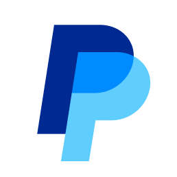

대표 로고대표 브랜드 마크
대표 로고대표 브랜드 마크홈 > 브랜드 매거진 > NHN
NHN Corporation
NHN은 게임을 기반으로 PAYCO 간편결제, 클라우드, 커머스·콘텐츠를 영위하는 한국의 종합 IT 기업이다.
산업 분야 기술·전자 · 공개 등급 자료 기반 · 브랜드 평가 4 ★
한눈에 보는 브랜드
NHN(엔에이치엔)은 게임 포털 한게임에 뿌리를 둔 한국의 IT 기업으로, 2000년 네이버와 한게임이 합쳐진 NHN㈜에서 2013년 8월 인적분할로 갈라져 NHN엔터테인먼트로 출발했다. 검색 포털을 가져간 네이버와는 이때부터 별개 회사다.
2019년 4월 다시 사명을 NHN으로 바꾸며 게임을 넘어 결제·클라우드·기술로 사업을 넓혔다. 2013년 분할과 2019년 재명명이 두 전환점이며, 2025년 연결 매출은 2조5163억원, 영업이익 1324억원으로 역대 최대 수준이다.
브랜드 관점
NHN을 이해하는 핵심은 한게임이라는 게임 뿌리에서 출발해 결제와 클라우드로 무게중심을 옮긴 다각화 궤적이다. 분할 직후 게임만으로는 성장 한계가 분명했고, NHN은 PG 1위 NHN KCP와 간편결제 페이코를 묶은 결제축, 공공·게임에 특화한 NHN클라우드 기술축을 동시에 키웠다.
2025년 매출은 게임·결제·기술 세 축이 고르게 떠받쳤고, 기술 부문은 분기 첫 영업흑자를 냈다. 검색 거인 네이버 그늘에서 떨어져 나온 회사가 결제 인프라와 공공 클라우드라는 B2B 영역에서 독자 입지를 만든 점이 차별점이다.
한국 독자에게는 '네이버 형제 기업'이라는 인식과 달리, 식권·기업복지·공공 AI데이터센터 같은 생활·산업 인프라에서 마주치는 회사라는 점이 실감 포인트다. 다만 게임 신작 의존도와 지배구조 논란은 과제로 남는다.
시작과 성장
1990년대 말 한국은 초고속 인터넷 보급과 함께 PC 게임 포털과 검색 시장이 폭발하던 시기였다. 1998년 한게임 커뮤니케이션이 세워지고 1999년 국내 최초 온라인 게임포털 한게임을 선보여 다섯 달 만에 회원 수백만을 모았다.
2000년 한게임과 검색 기업 네이버가 합쳐져 NHN㈜이 탄생했는데, 이는 한국 인터넷 역사상 손꼽히는 성공적 합병으로 평가된다. 첫 전환점은 2013년 8월 인적분할로, 포털은 네이버 주식회사가, 게임은 NHN엔터테인먼트가 가져가며 약 68.5 대 31.5 비율로 둘로 쪼개졌다.
이때부터 NHN과 네이버는 완전히 별개 상장사가 됐다. 두 번째 전환점은 2019년 4월 NHN엔터테인먼트가 사명을 NHN으로 되돌린 것으로, 게임 회사 이미지를 벗고 결제·클라우드·커머스를 아우르는 종합 IT 기업으로의 정체성 재정립을 알렸다.
이후 광주 국가 AI데이터센터 운영 등 인프라 사업으로 전개를 이어왔다.
브랜드 아이덴티티
NHN의 핵심 가치는 '연결'과 '확장'이다. 2019년 사명 변경과 함께 재정립한 CI는 두 N을 잇는 하이픈으로 즐거움과 가치를 잇는 CONNECT를 표현하고, 27도로 접힌 종이 형태를 빌려 무한한 가능성과 다방향 연결, 빠른 IT 산업에 유연하게 대응하는 모습을 담았다.
기업 색인 레드는 도전·열정·즐거움을 상징하며 다섯 가지 서브 컬러가 진취적 이미지를 더하고, 전용 서체 NHN 산스를 함께 만들어 시각 언어를 통일했다. 타깃은 게임 이용자라는 대중 소비자와 결제·클라우드를 도입하는 기업·공공기관으로 이원화돼 있다.
보이스는 정직하고 단순하되 도전적인 톤을 지향한다.
제품과 서비스
사업은 세 축이다. 게임은 한게임 보드·웹보드와 모바일 게임, 로얄홀덤 오프라인 대회로 운영된다.
결제는 PG 1위 NHN KCP와 간편결제·기업복지·식권 1위 페이코로 구성된다. 기술은 공공·게임 특화 NHN클라우드, 광주 국가 AI데이터센터, GPU·통합 메시지 플랫폼이 핵심이며 커머스·콘텐츠도 함께 둔다.
주요 채널은 자사 플랫폼과 공공·기업 B2B 계약이다.
현재 상태
본사는 경기 성남 판교에 있다. 지배구조는 창업·경영을 이끄는 이준호 회장과 그가 지분 100%를 보유한 제이엘씨·제이엘씨파트너스 등 개인회사, 가족 지분을 합쳐 과반에 이르는 구조로, 이 회장 측 가족 지분 합계는 약 51%로 알려져 있다.
국가는 대한민국. 2025년 연결 매출 2조5163억원, 영업이익 1324억원으로 역대 최대 실적을 기록했다.
그 밖의 미확인 세부 수치는 미공개.
BI/CI 변천사
대표 로고대표 브랜드 마크자주 묻는 질문
NHN Corporation는 어느 나라 브랜드인가요?
NHN Corporation는 한국의 기술·전자 브랜드입니다.
NHN Corporation의 브랜드 아이덴티티는 무엇인가요?
NHN의 핵심 가치는 '연결'과 '확장'이다.
NHN Corporation의 본사는 어디에 있나요?
본사는 경기 성남 판교에 있다.
NHN Corporation의 공식 웹사이트는 어디인가요?
NHN Corporation의 공식 웹사이트는 https://nhn.com/ 입니다.
함께 읽을 브랜드
 기술·전자 · 자료 기반네이버
기술·전자 · 자료 기반네이버네이버(Naver)는 한국을 대표하는 인터넷·기술 기업으로, 인터브랜드 2025 베스트 코리아 브랜드 4위(브랜드 가치 약 7.9조 원)에 올랐다.
 기술·전자 · 자료 기반라인
기술·전자 · 자료 기반라인라인(LINE)은 2011년 네이버 일본법인이 출시한 모바일 메신저로, 일본·대만·태국 등에서 국민 메신저로 자리 잡았다. 현재 운영사는 LY Corporation이...
 기술·전자 · 자료 기반카카오
기술·전자 · 자료 기반카카오카카오(Kakao)는 2006년 김범수가 설립한 한국의 인터넷·모바일 플랫폼 기업으로, 국민 메신저 카카오톡을 운영한다.
 기술·전자 · 자료 기반삼성전자
기술·전자 · 자료 기반삼성전자삼성전자(Samsung Electronics)는 한국을 대표하는 전자·반도체 기업으로, 인터브랜드 2025 베스트 코리아 브랜드 1위(브랜드 가치 약 122.2조 원...

기술·전자 · 편집 검수Paypal페이팔은 1998년 미국에서 출발해 온라인 송금과 결제를 대중화한 핀테크 기업으로, 이베이 거래의 표준 결제 수단으로 성장한 뒤 독립 상장해 전 세계 수억 명이 쓰는...
 기술·전자 · 자료 기반더존비즈온
기술·전자 · 자료 기반더존비즈온더존비즈온(Douzone Bizon)은 ERP·회계 소프트웨어와 클라우드 플랫폼을 제공하는 한국의 대표 기업용 SW 기업이다.
 기술·전자 · 편집 검수올림푸스
기술·전자 · 편집 검수올림푸스올림푸스(Olympus)는 1919년 일본에서 광학기기 제조사로 출발해 현재 내시경 등 의료기기를 핵심으로 하는 정밀기술 기업이다.
필립스는 기술을 과시하기보다 생활을 더 단순하고 건강하게 만드는 방향으로 브랜드 의미를 확장해 왔다. 전기·전자 기술은 기반이지만, 소비자가 인식하는 가치는 일상의...